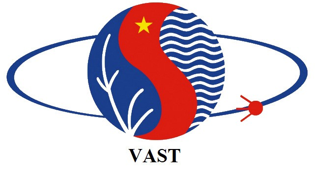

The First International Workshop on JAIST Alumni Day
Recent Advances in Artificial Intelligence and Semiconductor Technology
Hanoi, Vietnam, September 28, 2024
Since its establishment in early 1990s, Japan Advanced Institute of Science and Technology (JAIST) has been actively engaged with Vietnam via various bilateral government-funded programs. In this span of around 20 years, there are around 300+ Vietnamese alumni completing their Masters and/or PhDs in JAIST. Compared with other foreign universities around the world, this number of alumni associated with a particular university is very substantial in Vietnam. More importantly, as JAIST is a graduate research school focusing only some key areas, namely information technology, materials science and knowledge science, this number is even more significant. It shows the active and very effective contribution of JAIST to high-level and quality researchers for key STI areas in Vietnam.
With this significance, JAIST officially recognizes Vietnam Branch of JAIST Alumni in 2023. To promote its academic circle and image in Vietnam as well as to strengthen its R&D collaboration network, the First International Workshop on JAIST Alumni Day is proposed. This workshop is expected to organize regularly within the alumni circle. Vietnam Academy of Science and Technology (VAST) and JAIST are main sponsor for this event. Institute of Information Technology (IoIT) is the local host for the 1st workshop in 2024. Though the expertise among JAIST and its alumni in Vietnam are various with respect to information technology, materials science and knowledge science, the key topics in this workshop are Artificial Intelligence and Semiconductor Technology which are drawing most attention around the world and Vietnam. This workshop is an opportunity for JAIST alumni in Vietnam and JAIST professors/researchers to present their work in the key topics and possibly to foster research collaboration.
Themes: Artificial Intelligence, Semiconductor
- Presentation Submission: August, 2024
- Program Notification of Acceptance: September, 2024
- Workshop: 28 September, 2024
Ngo Hai Anh
IOIT, VAST
Email: ngohaianh@ioit.ac.vn
Phone: 098 859 6582
Dr. XYZ
JAIST Alumni in Vietnam
Phone: 090 190 5679
Vietnam Academy of Science and Technology
Institute of Information Technology
Japan Advanced Institute of Science and Technology
A/Prof. Dr. Nguyen Truong Thang (IoIT, Vietnam)
... (Some assigned members from Vietnam Branch)
Prof. Dr. Toshiaki Aoki (JAIST, Japan)
A/Prof. Dr. Nguyen Le Minh (JAIST, Japan)
...
► Prof. Dr. Kiyofumi Tanaka (JAIST, Japan)
► Prof. Dr. Yasushi Inoguchi (JAIST, Japan)
► Prof. Dr. Mineo Kaneko (JAIST, Japan)
► A/Prof. Dr. Nguyen Le Minh (JAIST, Japan)
► A/Prof. Dr. Huynh Van Nam (JAIST, Japan)
► ... (some more professors in semiconductor technology)
► ... (Vietnam side)